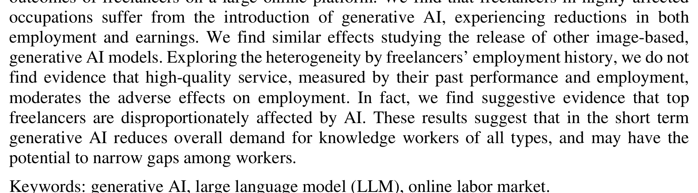
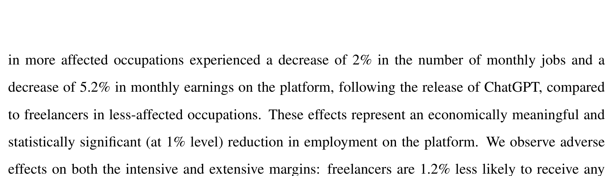
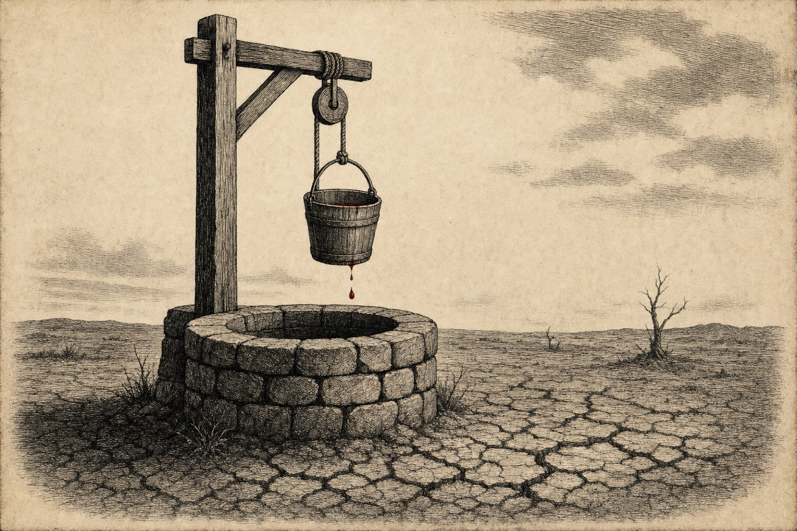

Page 07 of 11 — supporting argument III
The Market Already Pays Less
The dilemma stops being abstract at the first paycheck. In Organization Science, Hui, Reshef, and Zhou measured Upwork freelancers before and after ChatGPT, sorted by how exposed each occupation is to a text generator:
Exhibit 07-A · Hui, Reshef & Zhou“Freelancers in more affected occupations experienced a decrease of 2% in the number of monthly jobs and a decrease of 5.2% in monthly earnings on the platform, following the release of ChatGPT, compared to freelancers in less-affected occupations.”
After ChatGPT: change in monthly outcomes for writing-exposed freelancers vs less-exposed
Hover, tap, or tab to an entry to read it back
“…a decrease of 2% in the number of monthly jobs…” (Hui et al. 2–3)
“…a decrease of 5.2% in monthly earnings on the platform…” (Hui et al. 2–3)
Writing, the exact category these models trained on, is the same profession whose market they’re now destroying. The machine learned the job from the people it’s undercutting. The data backs it up:
Exhibit 07-B · Hui, Reshef & Zhou“[W]e do not find evidence that high-quality service, measured by their past performance and employment, moderates the adverse effects on employment. In fact, we find suggestive evidence that top freelancers are disproportionately affected by AI.”

Since the best human work is the most profitable work to imitate, it can have the effect of creating more of a target on it. The authors are honest about their limits. Upwork can’t see off-platform jobs, so this is a limited view of the effect (Hui et al.).

{kind=link}
Falling wages matter for the shape of the rule, not just for sympathy. A rule based on identity leaves these writers with nothing, because they aren’t a part of the labs vs. distillers war. A conduct rule gives them a way to make a claim against any system that takes their work by banned means or reproduces it into their market, no matter whose logo is on it.
